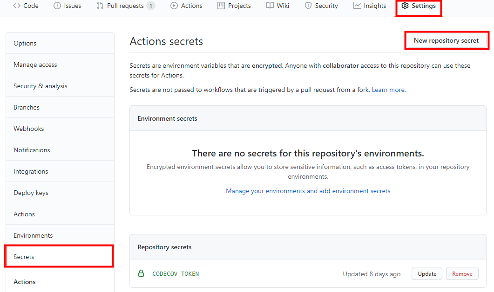

Codecov - Github Action 연동
Code Coverage
Code Coverage 는 테스트를 진행했을때 코드 자체가 얼마나 실행되었는지 측정하는 것이다. 코드는 구문(Statement), 조건(Condition), 결정(Decision) 으로 이루어진다. 이 세가지 항목을 얼마나 커버했느냐에 따라 측정값이 달라진다. 일반적으로 많이 사용되는 커버리지는 구문(Statement)커버리지이며, 실행 코드라인이 한번 이상 실행 되면 충족된다. 조건(Condition)커버리지는 각 내부 조건이 참 혹은 거짓을 가지면 충족된다. 결정(Decision) 커버리지는 각 분기의 내부 조건자체가 아닌 이러한 조건으로 인해 전체 결과가 참 혹은 거짓이면 충족된다.
JaCoCo
JaCoCo 는 Java Code Coverage 를 측정하는 오픈소스 라이브러리다. 테스트 결과에 따라 xml, html 형태로 보고서가 작성된다. 또한 목표하는 커버리지를 설정하고, 이를 만족하는지 확인 할 수 있다.
JaCoCo 설정
- Gradle 설정에 플러그인 추가 / 설정 진행
(상세 설정은 본 포스트 하단 참조.)
plugins {
id 'jacoco'
}
jacoco {
toolVersion = "0.8.5"
}
jacocoTestReport {
reports {
xml.enabled = true // codecov depends on xml format report
html.enabled = true
}
}
jacocoTestCoverageVerification {
violationRules {
rule {
element = 'CLASS'
limit {
counter = 'METHOD'
value = 'COVEREDRATIO'
minimum = 0.90
}
}
}
}
- gradle test 수행을 통해 정상 작동 확인
./build/report 경로에 정상적으로 jacoco 리포트가 생성 되었는지 확인한다.shell script gradle test jacocoTestReport jacocoTestCoverageVerificationCodecov
Codecov 는 Code Coverage 결과를 통합 관리하고, Github / Circle CI / Slack 등과 연동하여 사용할 수 있는 편의를 제공한다. 주로 Github PR 분석, PR Block, Merging Report 의 용도로 사용 한다.
Codecov 사용법
- Codecov 가입 진행 (Codecov 홈페이지)
- Codecov 를 사용할 Github 계정 / Repository 선택하면 Codecov Token 이 발급된다.
해당 토큰을 복사 후 Github Repository Secret 에 등록 한다.
 - Github Action 을 이용하여 Gradle test 결과를 Codecov 로 업로드
프로젝트 root 의 .github/workflows 디렉토리에 test.yml 을 생성한다. 내용은 아래와 같다.
name: Test with Gradle
on: # Event
push:
branches: [ master ]
pull_request:
branches: [ master ]
jobs:
test: # Job id
runs-on: ubuntu-latest # Runner
steps:
- uses: actions/checkout@v2 # Step
- name: Set up JDK 11
uses: actions/setup-java@v1
with:
java-version: 11
- name: Grant execute permission for gradlew
run: chmod +x gradlew
- name: Test with Gradle
run: ./gradlew test jacocoTestReport jacocoTestCoverageVerification
- name: Upload coverage to Codecov
uses: codecov/codecov-action@v1
with:
token: $
file: ./build/reports/jacoco/test/jacocoTestReport.xml
- Pull Request 요청시 bot 을 통한 자동 Test 결과 comment 생성
프로젝트 root 에 .codecov.yml 을 생성한다. 내용은 아래와 같다.
comment: # this is a top-level key
layout: "reach, diff, flags, files"
behavior: default
require_changes: false # if true: only post the comment if coverage changes
require_base: no # [yes :: must have a base report to post]
require_head: yes # [yes :: must have a head report to post]
branches: # branch names that can post comment
- "master"
기타 참고 사항
- Lombok에 의해 자동 생성된 코드에 대한 Test Coverage 예외처리 적용
프로젝트 root 에 lombok.config 를 생성한다. 내용은 아래와 같다.
config.stopBubbling = true
lombok.addLombokGeneratedAnnotation = true